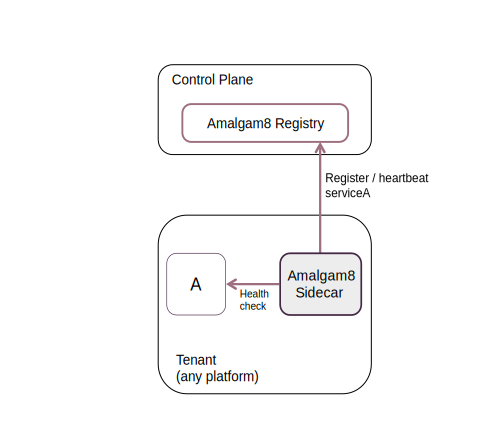
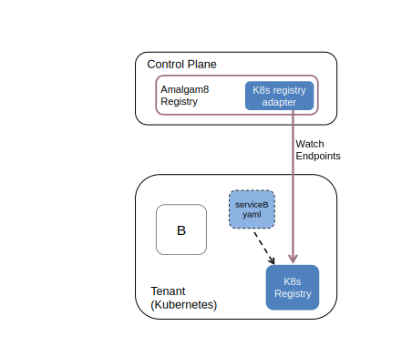

Amalgam8 Registry
To integrate and use a microservice in Amalgam8, it needs to be registered in the Amalgam8 Registry. The most basic way of registering, which can be used for microservices running on any platform / runtime, is shown in the following diagram:

The Amalgam8 sidecar is used to register and continuously send heartbeats to the registry on behalf of a microservice instance. In addition, the sidecar keeps track of the health of the application (microservice A in the figure above) and stops sending heartbeats if or when it terminates, soon after which the registration in the Amalgam8 Registry will expire and be removed. Note that if the sidecar is unable to send heartbeats to the Registry for some reason (say network disruption), the service's entry in the Registry might expire, causing the instance information to be removed from the Registry. In other words, the instance will become unavailable to other microservices. When the sidecar re-establishes connectivity with the Registry, it re-registers the service. This is a common service registration design pattern used in many microservice frameworks, and will work for services running anywhere.
Interoperability with other service registries
A key design feature of Amalgam8 Registry is to leverage features of any particular runtime platform that a microservice may be deployed in. The Registry supports the concept of adapters -- pluggable modules that can be used to populate the Registry with information from other sources instead of the sidecar, such as Etcd, Consul, Kubernetes' internal registry, etc. Currently, the Registry provides an adapter for Kubernetes, and can be used as a drop-in replacement for Netflix Eureka, with the added feature of multi-tenancy.
Kubernetes-Registry Adapter
A microservice running in Kubernetes with a corresponding service definition, will already have the endpoints (instances) being tracked by the Kubernetes runtime (kubelet) and reflected in the Kubernetes service registry. Instead of using the sidecar to explicitly registering this service once again in the Registry, Amalgam8 provides a Kubernetes adapter. The adapter can be configured to watch the Kubernetes registry and automatically mirror the endpoints in Amalgam8 as shown in the figure below.

In the above figure, service B is a Kubernetes service defined in serviceB.yaml. There is nothing that needs to be added or changed to integrate it with an Amalgam8 system. Instances, as they come and go, will be maintained in the Kubernetes registry by the Kubernetes runtime, and then automatically mirrored in the Amalgam8 Registry by the kubernetes-adapter.
Similar adapter plugins can be added to support other runtime environments where service registration is automatically managed by the container platform. For example, a Docker environment with Weave Flux allows services to be defined using the fluxctl command, the endpoints of which are then automatically tracked and reflected in its Etcd registry. Integration with Amalgam8's Registry could be done in a manner similar to the Kubernetes adapter.